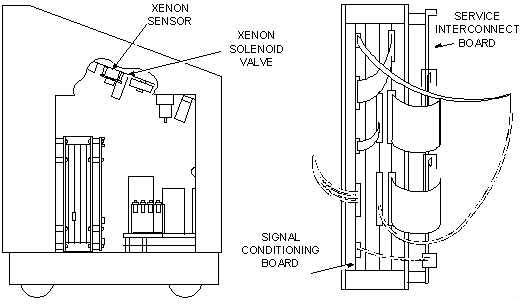

Operating Documentation
Direction 5112972-800, Rev# 2
CT Planned Maintenance Procedures
Operating Documentation |
| Required Persons | Preliminary Reqs | Procedure | Finalization |
|---|---|---|---|
| 1 | Timing Not Applicable | 10 mins | Timing Not Applicable |
Procedure Effectivity:
| Assembly: | XENON BLOOD FLOW |
| Subassembly: | |
| Purpose: | Calibrate Xenon Sensor |
| Last Revised: | July 1995 |
This procedure avoids using the small test bag to acquire a sample of the gas. The sampling can be done directly from the boxes main gas bag. Purge and then refill the bag with enough gas to perform the calibration and run a test study (about a third of the bag). This ensures that the sample will be the correct mixture of Xenon and oxygen.
Remove the left side cover and locate the silver Xenon solenoid value. The left port is used to collect the calibration sample. The right ports only function is to collect the bag sample at the beginning of a study. The hose from the right port will be switched to the left side port to supply the gas sample during the calibration.
Set the thumbwheel switch on the service interconnect board to three. Toggle the reset switch (innermost switch). “Xenon Calibration" should appear on the display. Remove the hose from the left port. Room air will be sampled to set the zero end of the adjustment. Toggle the middle switch to take a sample. The value will be posted on the display. It should read 0 +/- 25 MV. If not, adjust R80 (lower pot) on the signal conditioning board (See Illustration 1).
Illustration 1: Signal Conditioning Board

To set up the gain, remove the hose from the right port and connect it to the left port (a hose that is a couple inches longer may be needed to reach without kinking. It can be left on permanently). Toggle the middle switch. The sample should read 1650 +/- 25 MV. If not, adjust R81 (top pot) to obtain the correct value. (Wait a few seconds between samples to allow the electronics to stabilize).
When the correct value is reaches (same reading for 4 or 5 samples), go back and recheck the zero cal. The adjustments may affect each other. When complete, be sure to return all hoses to the correct ports and set the thumbwheel switch to 0. Run through a test study to be sure everything is connected properly and the cal is ok.
No finalization required.